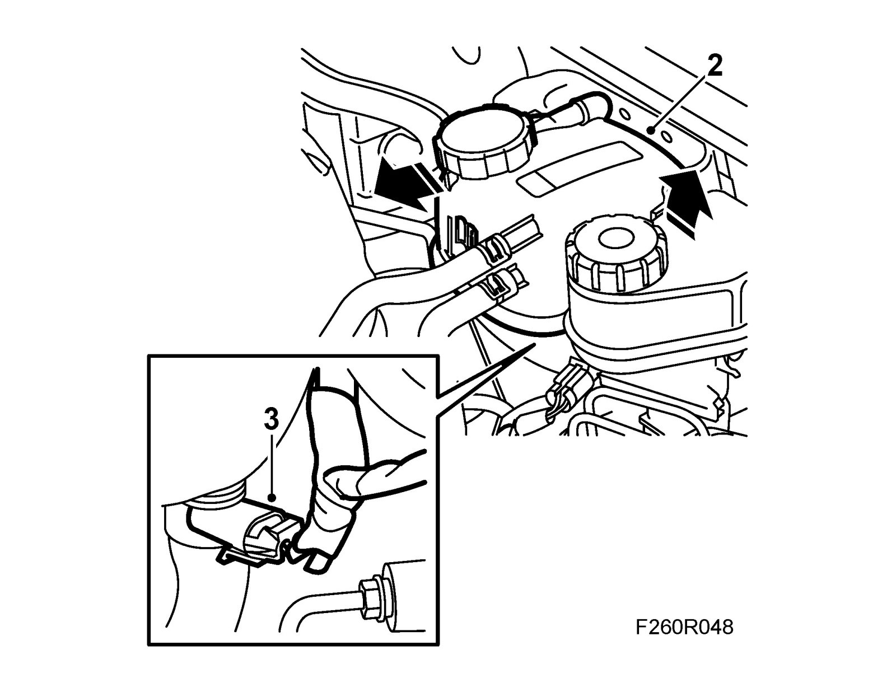
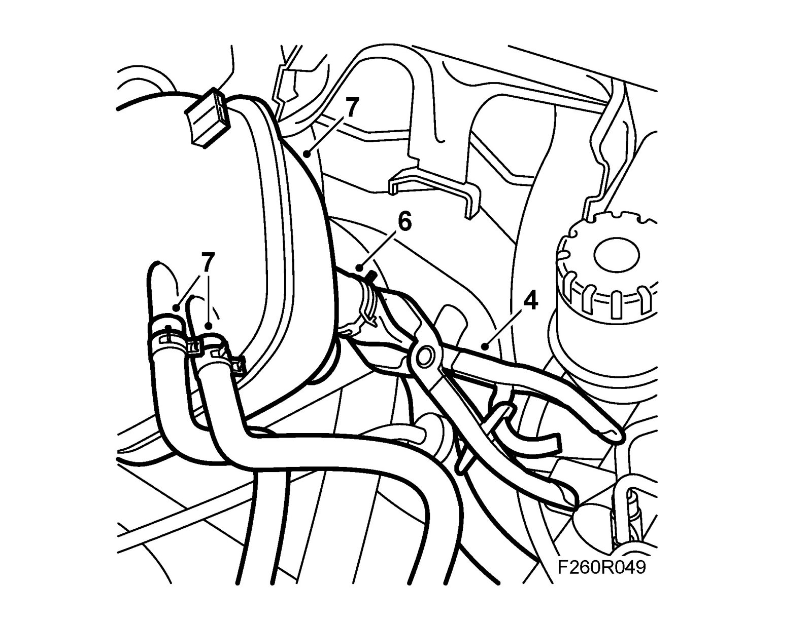
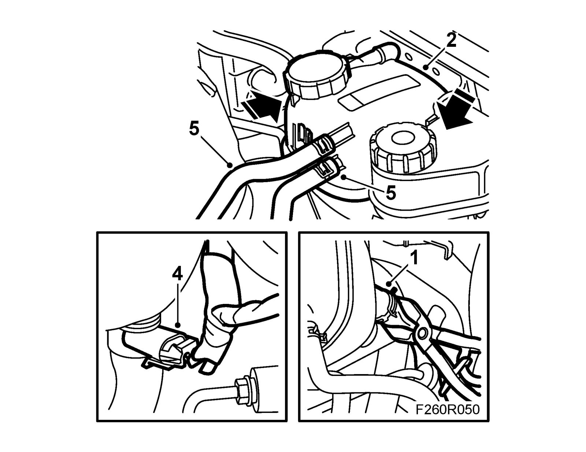

Coolant Reservoir: Service and Repair
Expansion tankWarning
The cooling system is under pressure. Hot coolant and steam can escape.
- Open the cap slowly to release the pressure.
- Carelessness can cause eye and burn injuries
To remove
1. Undo the expansion tank cap to release pressure and then retighten the cap.
2. Unplug the connector for the level sensor.

3. Undo the expansion tank and lift it up. Detach the ventilation hoses and move them away so they do not leak coolant.
4. Fit 30 07 739 Hose pinch-off pliers on the thick hose fastened to the bottom of the expansion tank. The pliers must be applied as close to the expansion tank as possible.

5. Move aside the expansion tank so that the ventilation connections are pointing up.
6. Detach the thick hose from the expansion tank.
7. Remove the expansion tank and drain the coolant into a receptacle.
To fit
1. Connect the thick hose to the expansion tank without tightening the hose clip.

2. Fit the expansion tank to its bracket on the body. Adjust the thick hose and fit the hose clip.
3. Remove the hose pinch-off pliers.
4. Plug in the level sensor connector.
5. Fit the ventilation hoses.
6. Fill with 40 - 93 170 402 Coolant to the correct level.
7. Start the engine and inspect the cooling system for leaks.